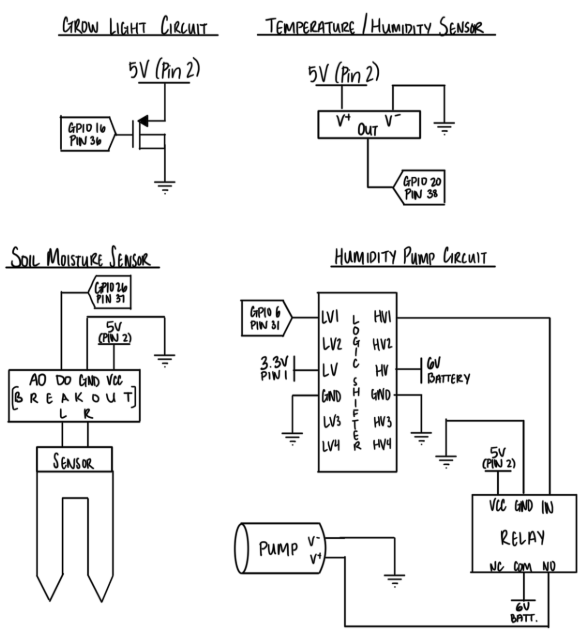
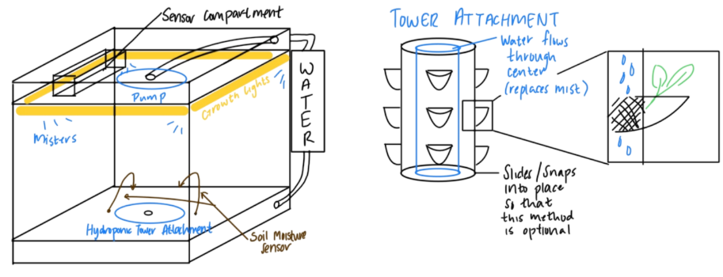
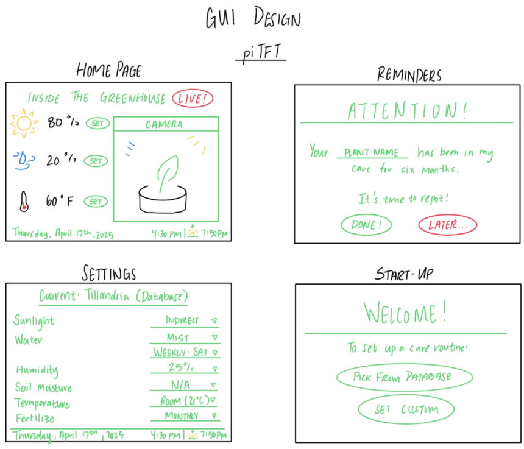
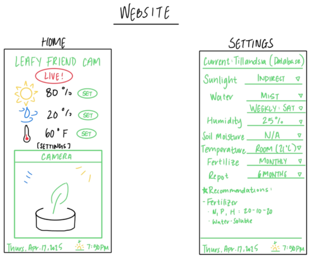

Smart Greenhouse Project
created by
Evan Leong (epl44) & Vidhi Srivastava (vs356).
May 15th, 2025
Demonstration Video
Introduction
The biggest challenges of raising plants in a dorm can be giving them the appropriate habitat to thrive in and remembering to water/care for them appropriately. The Smart Greenhouse resolves these challenges for small to midsize plants by allowing users to manually adjust the temperature, humidity, and exposure to sunlight inside of the enclosure. The RPi is connected to various sensors (temperature, humidity, and brightness) in the greenhouse and allowing the user to maintain the desired environment using a settings panel displayed on the RPi when the plant is first placed in the greenhouse, and adjust the settings as necessary at any time. The RPi also hosts a Flask web application that allows users on the same LAN to remotely view a camera feed of the inside of the greenhouse screen and live greenhouse environment statistics. This application also allows the user to change the sunlight exposure inside the greenhouse remotely at the press of a button.

Project Objectives:
- Remotely monitor plant and view greenhouse environment statistics.
- Manual control of light and humidity levels inside greenhouse.
- Ability to control greenhouse light levels remotely.
Design
Electrical Hardware
The hardware chosen for this project included a 5V UV grow light, a 5V DC water pump, an AC water pump for the hydroponics tower, a temperature and humidity sensor, and a capacitive soil moisture sensor.
Because the UV grow light pulls more current than the GPIO pins of the RPi 4B are capable of supplying, we also needed a MOSFET when supplying power to the light.
Similarly, the 5V DC water pump could also not be powered directly from the Pi, so we controlled it with a relay and powered it from a separate power supply.
Hardware Layout
The majority of electronics were placed on the top of the greenhouse to isolate them from water exposure and humidity. Sensors and other electronics that could not be placed on top of the greenhouse were placed inside.
Additionally, due to the mounting location of the PiTfT screen on the edge of the greenhouse, we needed to jump the connections from the TFT screen to the Pi with individual jumper wires. This also freed up the unused GPIO pins to be jumped to the breadboard.
A snapshot of the layout of the top-mounted electronics is shown below:
Hardware Layout (Top View)
Hardware Layout (Circuit Diagram)
TFT GUI
The design of the greenhouse's touchscreen GUI is divided into 2 main pages -- Menu Level 1 and Menu Level 2.
Menu Level 1 greets the user with a welcome page and prompts them to press button 17 on the TFT to begin the program.
A snapshot of the welcome splash page is shown below:
Smart Greenhouse GUI Menu Level 1
Upon entering Menu Level 2, the user can monitor current environmental metrics inside the greenhouse including Temperature, Humidity, Soil Moisture, and set light level.
Additionally, entering this preview activates the web server, allowing users to view the Web GUI concurrently.
Menu Level 2 also utilizes all 4 of the onboard TFT buttons, which enable the user to increase and decrease brightness, toggle the humidity pump on for .5s, and to quit the program.
In initial concept designs of the TFT GUI, we planned to have a live camera preview drawn on the TFT screen to run alongside the remote camera preview. After much testing however, this feature was removed and isolated to just the Web GUI -- the reasoning for this change is further discussed in the Testing section, but an initial benefit of this choice is additional space for larger text options to make the GUI more accessible and reduce the number of nested menus needed to display the same amount of information.
Smart Greenhouse GUI Menu Level 2
Web GUI
The web GUI was designed to be a replica of the GUI implemented on the PiTFT.
The GUI showcases a 640x480 px preview of the Raspberry Pi Camera 2 feed.
Hydroponic Tower
Referencing multiple YouTube Videos on hydroponic tower design, I designed a 5-plant hydroponic tower using Autodesk Inventor and Cura Slicer with dimensions that could fit our greenhouse enclosure (9" x 10.5" x 14").
Below is a picture of the final product printed in white PLA by RPl:
Hydroponic Tower CAD
For the rain plate and lid for the hydroponics tower, I referenced designs uploaded on Printables.com and scaled them up to fit the custom hydroponic tower:
Below is a picture of the rain plate and lid for the tower.
Hydroponic Tower Rainplate (Inventor)
And below is the final assembly used to check tolerancing and fit of the parts before sending the .STLs to RPL for printing:

Hydroponic Tower Final Assembly (Inventor)
Drawings
The following concept sketches were created while drafting the project. While many elements of the designs were changed, we have attached these original sketches for additional clarity and to demonstrate the number of redesigns the system underwent throughout the work period.
  Testing
The modularity of our system and code design allowed us to use a fairly simple, iterative testing strategy, in which we implemented each component separately first in order to understand its use, and then progressively added them together. For example, once we were able to connect to the piCam and take short pictures and preview videos, we began integrating the live feed into a pygame screen so that the user could monitor the plant from the piTFT screen, and finally, we placed this live stream on the website instead so that the camera adds to the remote monitoring feature. The video below shows the second stage of this process, where the piCam stream was placed on the piTFT screen along with an early version of our GUI.
To test our hardware components, we would first wire them to the breadboard as close to the expected circuit as possible, but use the power supply and oscilloscope instead to protect the RPi in case our circuit was wired incorrectly. After we verified that the component would operate as expected using the power supply and oscilloscope, we would then connect the circuit to the RPi, and then we began on the code to operate the component as necessary.
Results
Our greenhouse, while we weren't able to implement every feature exactly as planned due to various time/logistics constraints discussed below, is able to efficiently regulate the conditions inside to ensure a safe and comfortable space to grow for many kinds of plants with diverse needs using the two growth methods. The greenhouse can monitor the temperature, humidity, brightness level, and soil moisture of a potted plant, report these conditons using a remote web app, manually control the brightness and humidity, remotely control the brightness, supply a camera feed of the inside of the greenhouse, and support plant growth in a standard pot or in a hydroponic tower.
Conclusions
We ran into many logistical and time constraints over the course of this project. This project was very hardware-intensive and required a slightly different skillset than we expected initially. For example, implementing the pumps to create humidity control was far more difficult than we anticipated, because we initially believed that we could insert small water atomizer nozzles along the tubing so that we could create mist in the greenhouse for a short period. However, we found that not only would the pumps need to be submerged for the entire period of use, the nozzles required more water pressure than either pump could feasibly supply without rattling/movement of the pump in the water container, so we had to pivot to using the extra sponges to create vapor pressure over time inside of the greenhouse. Neither of us had used a relay before, and ran into an issue where the relay would turn on any time the program began. We found after much investigation that the 3.3V GPIO output of the RPi was too low to properly close the relay during operation, so we needed to use a level shifter to increase the input into the relay control signals to a 5V maximum.
Future Work
Other than addressing the issues with the project discussed above, we originally thought of many ways to expand on our project and provide even more functionality for the users.
Work Distribution
Project group picture

Evan
epl44@cornell.edu
Vidhi
vs356@cornell.edu
Parts List
- Raspberry Pi 4B $35.00
- Raspberry Pi Camera V2 $25.00
- Adafruit PiTFT Capactive Touch Screen - $44.95
- Acrylic Greenhouse Casing - 18.89
- 5V DC Water Pump - $6.99
- Soil Moisture Sensor - $1.99
- 5V UV Grow Light - $9.99
- Temperature + Humidity Sensor - $1.99
- Plant Growing Medium Sponges - $0.20 x 5
- AC Water Pump - 6.99
- Logic Level Shifter, MOSFETs, Resistors and Wires - Provided in lab
- Hydroponic Tower and Net Pots - 3D Printed @ RPL
Total: $152.79
References
PiCamera2 Github RepositoryPi Camera v2 to Flask Stream
RPi Pinout
Adafruit Forums
Printables Pigpio Library
RPi GPIO Documentation
All code development for the project was tracked via Git and housed in the following Github Repository: https://github.com/evnleong/ECE5725
An annotated snippet of the main Python script that runs on the Pi is shown in the code appendix below. It imports custom made Python modules that encapsulate details for each hardware element of the greenhouse (camera,UV grow light,5V DC pump, etc.), making the code more modular and easier to debug.
Code Appendix
import pygame,pigame
from pygame.locals import *
import time,datetime
import os
import sys
import RPi.GPIO as GPIO
from threading import Thread, Event
from camera import PlantCamera
from light import GrowLight
from thsensor import THSensor
from pump import PlantPump
from msensor import MSensor,detect_moisture
import web
from globals import plant_data
stop_event = Event()
# Environment Setup
os.putenv('SDL_VIDEODRV','fbcon')
os.putenv('SDL_FBDEV', '/dev/fb1')
os.putenv('SDL_MOUSEDRV','dummy')
os.putenv('SDL_MOUSEDEV','/dev/null')
os.putenv('DISPLAY','')
# Setup GPIO for TFT
GPIO.setmode(GPIO.BCM)
GPIO.setup(22, GPIO.IN, pull_up_down=GPIO.PUD_UP)
GPIO.setup(17, GPIO.IN, pull_up_down=GPIO.PUD_UP)
GPIO.setup(23, GPIO.IN, pull_up_down=GPIO.PUD_UP)
GPIO.setup(27, GPIO.IN, pull_up_down=GPIO.PUD_UP)
GPIO.setup(6,GPIO.OUT,initial = GPIO.HIGH) # Keep GPIO 6 High to keep pump relay open
#Colours
WHITE = (255,255,255)
BLACK = (0,0,0)
LIGHT_GREEN = (132, 245, 115)
DARK_GREEN = (27, 117, 13)
pygame.init()
pitft= pigame.PiTft() # enable touchscreen
appWidth = 320
appHeight = 240
#Date & Time
date = datetime.datetime.today().strftime('%Y-%m-%d %H:%M:%S')
#Fonts + Text
font_big = pygame.font.Font(None, 35)
font_med = pygame.font.Font(None, 20)
font_sm = pygame.font.Font(None,15)
video_title_text = font_sm.render("Live Camera", True, (DARK_GREEN))
welcome_text= font_big.render("Welcome!", True, (DARK_GREEN))
enter_text = font_med.render("Press Button #17 to Enter", True, (DARK_GREEN))
text_surface3 = font_big.render("Temp:", True, (DARK_GREEN))
timestamp_text = font_sm.render(f"Date: {date} " , True, (DARK_GREEN))
brightup_text = font_sm.render(f"< Brightness Up" , True, (DARK_GREEN))
brightdown_text = font_sm.render(f"< Brightness Down" , True, (DARK_GREEN))
pump_text = font_sm.render(f"< Increase Humidity" , True, (DARK_GREEN))
quit_text = font_sm.render(f"< Quit" , True, (DARK_GREEN))
stats_text = font_med.render(f"Greenhouse Statistics" , True, (DARK_GREEN))
screen = pygame.display.set_mode((appWidth, appHeight))
plantCamSuccess = True
# camera = Picamera2()
code_run = True
try:
plantCam = PlantCamera()
except:
code_run= False # if RPi Cam 2 fails to intialize, don't run mainloop -- will crash
plantCamSuccess =False
growLight = GrowLight(pin=16)
thSensor = THSensor(pin=20)
try:
waterPump = PlantPump(pin = 6)
except Exception as e:
raise e
mSensor = MSensor(pin=26)
# Assets
sun_icon = pygame.transform.scale(pygame.image.load(os.path.join('assets','sun.png')), (40,40))
temp_icon = pygame.transform.scale(pygame.image.load(os.path.join('assets','temp.png')), (50,50))
water_icon= pygame.transform.scale(pygame.image.load(os.path.join('assets','water.png')), (50,50))
menu_level_1 = True # initially menu level 1 active
menu_level_2 = False # initially menu level 2 is false
start_preview = False
# Callbacks
def button27(channel):
growLight.increaseDutyCycle()
def button23(channel):
growLight.decreaseDutyCycle()
def button22(channel):
print("pump on")
waterPump.pump_on()
def button17(channel):
print('Entering Main Menu')
global menu_level_1, menu_level_2, start_preview
menu_level_1 = False
menu_level_2 = True
start_preview = True
screen.fill((LIGHT_GREEN))
pygame.display.update()
# Add event listeners
GPIO.add_event_detect(27, GPIO.RISING, callback = button27, bouncetime =200)
GPIO.add_event_detect(23, GPIO.RISING, callback = button23, bouncetime =200)
GPIO.add_event_detect(22, GPIO.RISING, callback = button22, bouncetime =200)
GPIO.add_event_detect(17, GPIO.RISING, callback = button17, bouncetime =200)
def temphumidityThread():
while code_run:
try:
text_light_level = font_med.render(f"Light Level: {growLight.dutyCycle}%",True,(DARK_GREEN) )
light_level_rect = text_light_level.get_rect(center=(230,50))
humidity,temperature = thSensor.update_ht()
text_humidity = font_med.render(f"Humidity: {humidity}%", True, (DARK_GREEN))
text_temperature = font_med.render(f"Temp: {temperature}*F", True, (DARK_GREEN))
humidity_rect = text_humidity.get_rect(center=(230,150))
temperature_rect = text_temperature.get_rect(center=(225,100))
moisture = plant_data['moisture']
text_moisture = font_med.render(f"Moisture: {moisture}", True, (DARK_GREEN))
moisture_rect = text_moisture.get_rect(center=(230,180))
screen.fill(LIGHT_GREEN,humidity_rect)
screen.fill(LIGHT_GREEN,temperature_rect)
screen.fill(LIGHT_GREEN,light_level_rect)
screen.fill(LIGHT_GREEN,moisture_rect)
pygame.display.update()
screen.blit(text_humidity,humidity_rect)
screen.blit(text_temperature,temperature_rect)
screen.blit(text_light_level,light_level_rect)
screen.blit(text_moisture,moisture_rect)
time.sleep(1)
plant_data['temperature'] = temperature
plant_data['humidity'] = humidity
plant_data['light_level'] = growLight.dutyCycle
# plant_data['moisture'] = moisture
plant_data['pump_status'] = waterPump.state
except Exception as e:
print(e)
## Uncomment to have plant camera preview blitted to TfT GUI -- cannot use simulataneously with web preview
# def camThread():
# while code_run:
# curr_time = time.time()
# try:
# plantCam.generate_preview(screen)
# except:
# pass
def timestampThread():
while code_run:
try:
date = datetime.datetime.today().strftime('%H:%M:%S %Y-%m-%d')
timestamp_text= font_sm.render(f"Current Time: {date} " , True, (DARK_GREEN))
timestamp_rect = timestamp_text.get_rect(center=(90,230))
screen.fill(LIGHT_GREEN,timestamp_rect)
pygame.display.update()
screen.blit(timestamp_text,timestamp_rect)
time.sleep(1)
except:
pass
curr_time = time.time()
init_time = time.time()
flask_thread_started = False
while (code_run and curr_time < init_time + 360):
curr_time = time.time()
events=pygame.event.get()
pitft.update() #refresh touchscreen
for e in events:
if (e.type == pygame.KEYDOWN and e.key == pygame.K_SPACE):
print('Quit Callback')
code_run = False
if menu_level_1:
screen.fill((LIGHT_GREEN))
screen.blit(welcome_text,(100,100))
screen.blit(enter_text,(80,160))
# for e in events:
# if(e.type is MOUSEBUTTONUP):
# x,y = pygame.mouse.get_pos()
# text_surface3 = font_big.render(f' Touch at ({x},{y}) ', True, (DARK_GREEN))
# rect1 = text_surface3.get_rect(center=(160,100))
# screen.blit(text_surface3, rect1)
# if ( y > 200 ):
# print('entering menu 2')
# menu_level_1 = False
# menu_level_2 = True
# start_preview = True
# screen.fill((LIGHT_GREEN))
# pygame.display.update()
elif menu_level_2:
if (start_preview):
#blit once when preview starts--
screen.fill((LIGHT_GREEN))
screen.blit(sun_icon,(130,25))
screen.blit(temp_icon,(130,75))
screen.blit(water_icon,(130,145))
screen.blit(brightup_text,(10,0))
screen.blit(brightdown_text,(10,60))
screen.blit(pump_text,(10,120))
screen.blit(quit_text,(10,190))
screen.blit(stats_text,(145,10))
if not flask_thread_started:
web.start_flask_thread(plantCam,growLight)
flask_thread_started = True
elif flask_thread_started: #if button 17 pressed again, quit
code_run = False
start_preview = False
t1 = Thread(target=temphumidityThread)
t1.start()
t2 = Thread(target=timestampThread)
t2.start()
pygame.display.update()
code_run = False # update code_run to false on timeout
screen.fill((LIGHT_GREEN))
growLight.light_off()
pygame.display.update()
if plantCamSuccess:
plantCam.close()
# if t1.is_alive():
# t1.join()
# if t2.is_alive():
# t2.join()
pygame.quit()
GPIO.cleanup()
del(pitft) # stop touch monitoring
sys.exit()